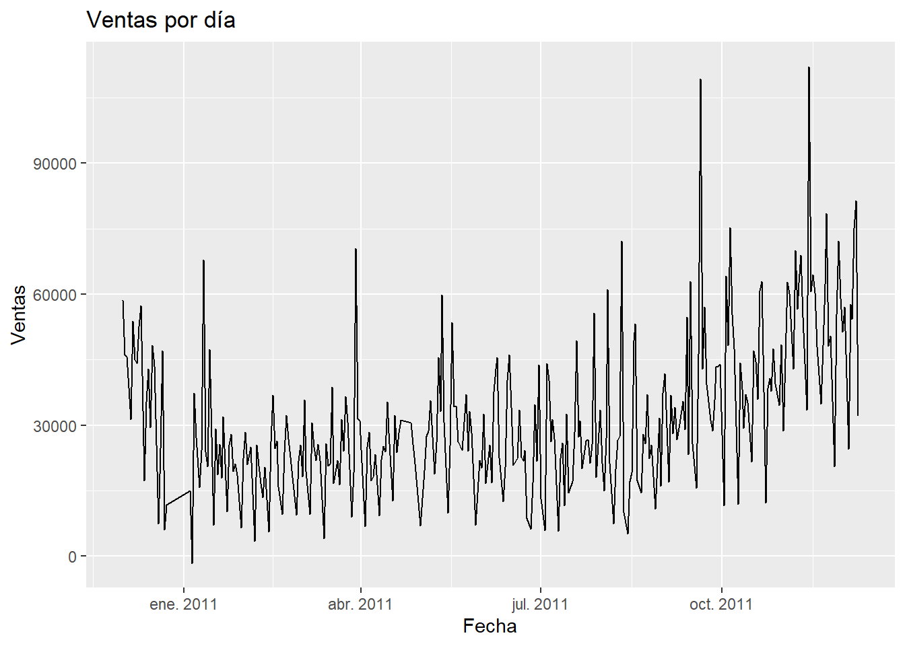
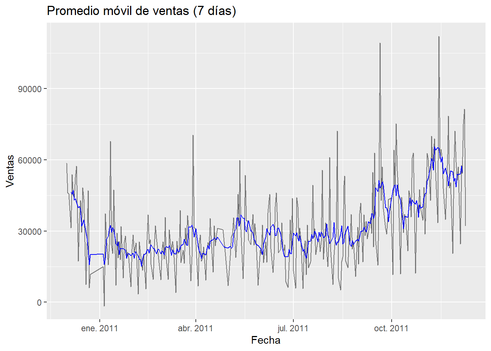
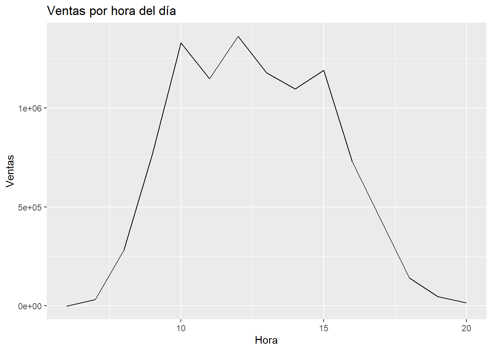
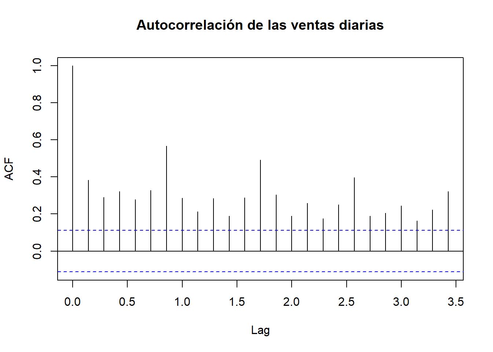

Bookdown Online Retail
2025-05-27
1 Introducción
El presente documento amplía el análisis iniciado en la Unidad 1, utilizando herramientas estadísticas para estudiar la evolución de una variable clave del conjunto de datos Online Retail. En particular, se analiza el comportamiento temporal de las ventas totales con el objetivo de identificar patrones, tendencias y ciclos que puedan ser útiles para la toma de decisiones empresariales.
A través del uso de funciones específicas en R, se aplican técnicas como el promedio móvil, la autocorrelación (rezagos) y la descomposición estacional. Estos métodos permiten descomponer la serie en componentes más interpretables y detectar la posible presencia de estructuras subyacentes como estacionalidad o cambios de tendencia.
1.1 Procesamiento de datos
library(readxl)
library(dplyr)
library(ggplot2)
library(zoo)
library(lubridate)
library(forecast)
# Cargar los datos
datos <- read_excel("Online-Retail.xlsx")
# Convertir fechas y calcular ventas
datos <- datos %>%
mutate(Fecha = as.Date(InvoiceDate),
Hora = format(as.POSIXct(InvoiceDate), "%H:%M:%S"),
ventas = Quantity * UnitPrice)1.2 Ventas por Día
ventas_dia <- datos %>%
group_by(Fecha) %>%
summarise(ventas_totales = sum(ventas, na.rm = TRUE))
ggplot(ventas_dia, aes(x = Fecha, y = ventas_totales)) +
geom_line() +
labs(title = "Ventas por día", x = "Fecha", y = "Ventas")
1.3 Promedio móvil (7 días)
Análisis: Ventas por día La serie temporal diaria muestra un comportamiento interesante:
Tendencia general al alza: Aunque la serie presenta una alta variabilidad diaria, se puede apreciar una tendencia ascendente a lo largo del tiempo, especialmente a partir de mediados del año 2011. Esto podría indicar un crecimiento progresivo en las ventas, posiblemente relacionado con el aumento de la demanda, mayor visibilidad de la tienda, o campañas de marketing.
Alta volatilidad: La serie muestra fluctuaciones diarias muy marcadas, lo cual es típico en el comercio electrónico donde los picos de ventas pueden estar asociados a días de promoción, lanzamientos de productos o eventos especiales.
Picos significativos: Se observan picos agudos en septiembre, octubre y noviembre de 2011. Estos podrían estar relacionados con: Periodos previos a compras de fin de año. Black Friday u otros eventos estacionales. Grandes pedidos corporativos o mayoristas.
Estacionalidad posible: Aunque no se detecta un patrón repetitivo semanal claro a simple vista, los picos y la dispersión creciente podrían sugerir cierta estacionalidad a investigar con más detalle (por ejemplo, ventas por día de la semana o por mes).
ventas_dia <- ventas_dia %>%
mutate(prom_movil = zoo::rollmean(ventas_totales, k = 7, fill = NA))
ggplot(ventas_dia, aes(x = Fecha)) +
geom_line(aes(y = ventas_totales), alpha = 0.5) +
geom_line(aes(y = prom_movil), color = "blue") +
labs(title = "Promedio móvil de ventas (7 días)", y = "Ventas")## Warning: Removed 6 rows containing missing values or values outside the scale range
## (`geom_line()`).
1.4 Ventas por hora
ventas_hora <- datos %>%
mutate(Hora = hour(as.POSIXct(Hora, format = "%H:%M:%S"))) %>%
group_by(Hora) %>%
summarise(ventas_totales = sum(ventas, na.rm = TRUE))
ggplot(ventas_hora, aes(x = Hora, y = ventas_totales)) +
geom_line() +
labs(title = "Ventas por hora del día", x = "Hora", y = "Ventas")
1.5 Autocorrelación (ACF)
ventas_ts <- ts(ventas_dia$ventas_totales, frequency = 7)
acf(ventas_ts, main = "Autocorrelación de las ventas diarias")
1.7 Conclusiones
El análisis realizado sobre los datos de ventas del dataset Online Retail permitió identificar varios patrones relevantes en la dinámica de las transacciones.
El promedio móvil reveló tendencias a mediano plazo, suavizando la variabilidad diaria. La autocorrelación mostró dependencia entre días cercanos, lo que sugiere la posibilidad de usar modelos autoregresivos. Por su parte, la descomposición estacional evidenció patrones cíclicos consistentes que podrían asociarse con comportamientos de consumo en ciertos días de la semana o épocas del año.
Este análisis facilita la toma de decisiones informadas en estrategias comerciales, optimización de inventario o campañas promocionales, contribuyendo así a un manejo más eficiente del negocio.
1.8 Fuente de datos
Los datos utilizados corresponden al conjunto “Online Retail” disponible públicamente en el repositorio de UCI Machine Learning:
https://archive.ics.uci.edu/dataset/352/online+retail